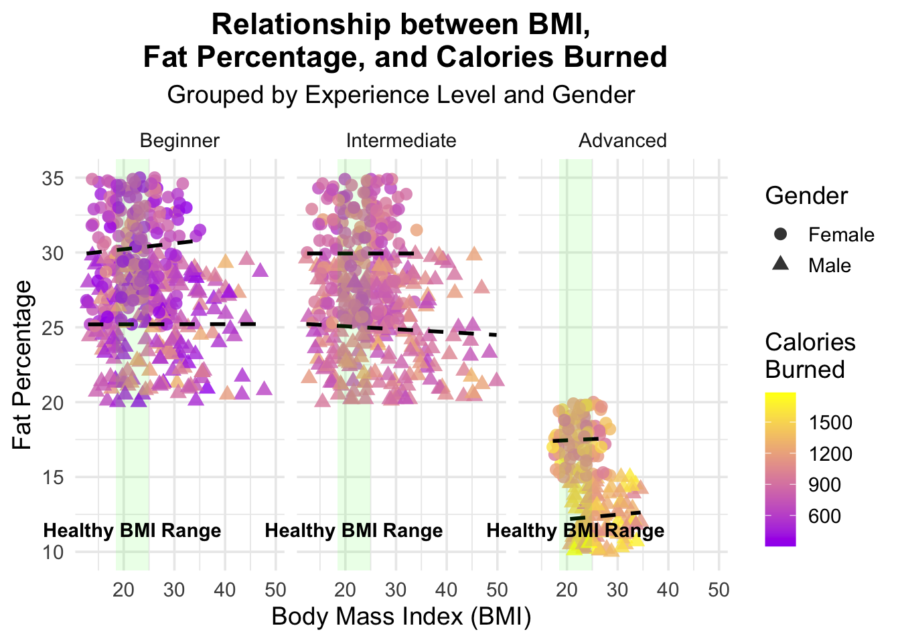

Rows: 973 Columns: 15
── Column specification ────────────────────────────────────────────────────────
Delimiter: ","
chr (2): Gender, Workout_Type
dbl (13): Age, Weight (kg), Height (m), Max_BPM, Avg_BPM, Resting_BPM, Sessi...
ℹ Use `spec()` to retrieve the full column specification for this data.
ℹ Specify the column types or set `show_col_types = FALSE` to quiet this message.
`summarise()` has grouped output by 'Gender'. You can override using the
`.groups` argument.
kable(summary_table, digits =2, caption ="Gym Member Statistics by Gender and Experience Level")
Gym Member Statistics by Gender and Experience Level
Gender
ExperienceLevel
AvgAge
AvgBMI
AvgFatPercentage
AvgWorkoutFrequency
AvgCaloriesBurned
AvgSessionDuration
Female
1
38.70
22.41
30.31
2.51
693.54
1.02
Female
2
37.93
23.03
29.93
3.55
865.08
1.25
Female
3
38.47
22.72
17.50
4.52
1191.72
1.77
Male
1
39.11
26.64
25.20
2.44
756.21
1.00
Male
2
39.31
27.27
24.93
3.52
935.30
1.25
Male
3
38.13
26.56
12.38
4.54
1330.94
1.75
The analysis reveals several patterns in gym members’ fitness metrics and workout behaviors across experience levels and genders:
The average age of gym members is consistent, ranging from 37 to 39 years, with no clear trend correlating age to experience level for either gender. For BMI (Body Mass Index), males consistently have higher values than females across all experience levels. Female BMI remains stable (22.41 to 23.03), whereas males see a slight increase from level 1 to 2, followed by a decrease at level 3.
In terms of fat percentage, significant reductions occur with increasing experience levels. Females exhibit a dramatic drop from 29.93% at level 2 to 17.50% at level 3, while males see an even steeper decline from 24.93% to 12.38%. Notably, females have higher fat percentages than males at levels 1 and 2. Workout frequency also shows a steady increase across experience levels for both genders, rising from approximately 2.5 days per week at level 1 to 4.5 days per week at level 3, with minimal gender differences.
The calories burned per session and session duration both increase significantly with experience. Level 1 members burn fewer calories and spend about 1 hour per session, whereas level 3 members burn considerably more calories and spend around 1.75 hours per session. Although males consistently burn more calories than females, their workout duration and frequency remain similar at comparable experience levels.
Key insights include the strong correlation of experience level with workout frequency, calories burned, and session duration for both genders. Fat percentage decreases significantly with higher experience levels, particularly between levels 2 and 3, highlighting a potential “breakthrough” in fitness improvement. Age, however, appears unrelated to experience level, suggesting the gym’s appeal to a diverse age range. These trends underline the importance of consistent effort and progressive improvement in achieving fitness goals.
library(ggplot2)library(dplyr)library(viridis) # For a color-blind friendly palette
Loading required package: viridisLite
Attaching package: 'viridis'
The following object is masked from 'package:scales':
viridis_pal
library(ggplot2)library(dplyr)ggplot(gym_members_data, aes(x = BMI, y = FatPercentage, color = CaloriesBurned, shape = Gender)) +geom_point(alpha =0.8, size =3) +facet_wrap(~ExperienceLevel, labeller =labeller(ExperienceLevel =c("1"="Beginner", "2"="Intermediate", "3"="Advanced"))) +scale_color_gradient(low ="purple", high ="yellow", name ="Calories\nBurned") +scale_shape_manual(values =c("Female"=16, "Male"=17)) +labs(title ="Relationship between BMI,\n Fat Percentage, and Calories Burned",subtitle ="Grouped by Experience Level and Gender",x ="Body Mass Index (BMI)",y ="Fat Percentage",shape ="Gender") +theme_minimal(base_size =14) +theme(legend.position ="right",plot.title =element_text(hjust =0.5, face ="bold"),plot.subtitle =element_text(hjust =0.5)) +geom_smooth(aes(group = Gender), method ="lm", se =FALSE, linetype ="dashed", alpha =0.5, color ="black") +annotate("rect", xmin =18.5, xmax =24.9, ymin =-Inf, ymax =Inf, fill ="green", alpha =0.1) +annotate("text", x =21.7, y =min(gym_members_data$FatPercentage) +1, label ="Healthy BMI Range", fontface ="bold", vjust =0) +coord_cartesian(clip ="off")
`geom_smooth()` using formula = 'y ~ x'

This visualization considers numerous factors that are relevant to the health data and consolidates them into one place.
On my visualization, I grouped the records by experience level, and then plotted the relationship between BMI and fat percentage, with each data point holding information regarding gender and calories burned.
The dashed black lines show the general trend of the relationship between BMI and Fat Percentage for each gender within each experience level. They help visualize whether there’s a positive or negative correlation between BMI and Fat Percentage, and how this relationship might differ between genders or across experience levels.
From the visualization, we can see that the group of advanced gym-goers tend to have a significantly lower fat percentage than its beginner and intermediate counterparts. Also, the calories burned by the advanced individuals seem to be substantially greater than the beginner and intermediate groups.
Also, it is worth noting that each of the sections of the visualizations are somewhat chair-like. This shape is influenced by the men in the group that have higher BMIs than the rest of the group, but a lower fat percentage. An explanation for this situation can be a higher concentration of muscle mass in these individuals.
From my personal experience, men tend to place a higher emphasis on the importance of strength training, suggesting that they may have a larger BMI. This also explains the discrepancy between high (unhealthy) BMI in advanced individuals. BMI is a measure of weight to height (simplified), and is not necessarily a measure of fat content.
I also thought it was interesting to see how the beginners and intermediates have very similar metrics, and a stark difference is apparent in the advanced category.